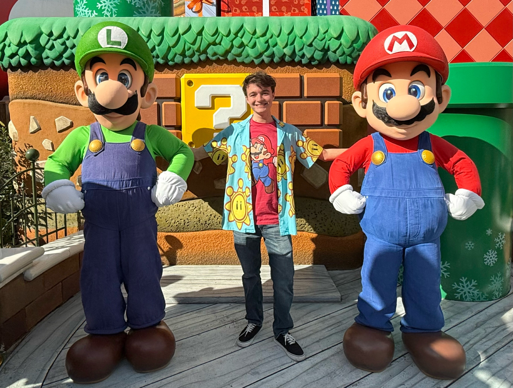

About Me
 My name is Dominic Giannotti. I was born on June 15, 2005. I’m currently studying Computer Science with a focus on Web Development at Ozarks Technical Community College. I'm also an Eagle Scout.
Creating websites is something I genuinely enjoy because it allows me to express my creativity and problem-solving skills at the same time. But beyond that, my biggest dream is to bring my animated series, Pyro, Alex, and Rob, to life as a full-time creative career. I hope one day this series becomes something stable and successful — something I can build my future on.
In the Beginning
I've always been a massive fan of Nintendo. I collect their consoles, handhelds, and games, and growing up, I would binge-watch anything Mario-related. One YouTube channel in particular, Super Mario Logan, had a huge impact on me. It featured plush characters from the Mario franchise, and even though the content had some inappropriate language (which I didn’t realize at the time), I thought it was hilarious.
I would grab my iPad and my own Nintendo plushes to make my own five-minute "episodes" inspired by their content. Eventually, at age 13, I learned how to actually upload videos to YouTube. This is where my passion for making videos and stories really took off. I even had some friends join me at the time for new voices. I ran that channel for a few years before deciding to retire it, but the spark it gave me never went away. And neither did my love of Nintendo and their history. Still a huge fan to this day.
If you’re curious about Super Mario Logan, you can find re-uploads of their old content here:
Watch SML Reuploads
The Origin of Pyro, Alex, and Rob
Pyro, Alex, and Rob started as silly stick figure comics in my 7th grade English class, drawn with an old friend on loose paper. Sadly, the original drawings are long gone, but I still remember them clearly. The very first comic was about Rob crying over the ending of Marvel's Endgame, Alex spoiling it mid-conversation, and Pyro freaking out because he was about to watch it.
Back then, Pyro was actually a nickname — his real name was Flamesmen, and in the comic's title panel, he crossed out “Flamesmen” and wrote “Pyro” over it in marker. The name stuck from then on.
After that class, the characters faded into the background of my life for a few years. I got a drawing tablet for Christmas one year, hoping to revive the idea — only to realize it required a computer I didn’t have yet. I even experimented with turning the characters into SCPs for fun — Pyro and Rob as SCP subjects, Alex as a Class C Guard — but I scrapped that quickly. I wanted something original.
A Dream Reignited
At 19, the dream returned stronger than ever. I added a new character — Dr. Kreel — and began writing a deeper story about who Pyro and Rob are, how they came to be, and how Alex fits into their world. My first animation was created with Flipnote Studio 3D on my 3DS. It was basic, and the characters lacked detail, but it was a real start. Now, with a proper computer and drawing tablet, I’m working hard to bring these characters to life with much more depth and emotion.
I’m a one-man editing team, but I’ve had amazing help from William (Earl) Smith, who voices Rob and Dr. Kreel and also proofreads my scripts to catch continuity errors. I’ve already completed many scripts and even included subtle foreshadowing in some — so theory lovers, pay attention!
While most episodes are story-driven, there will be more relaxed, world-building ones too. But don’t let those fool you — sometimes the lighthearted episodes contain major details hidden in plain sight. Keep an eye out.